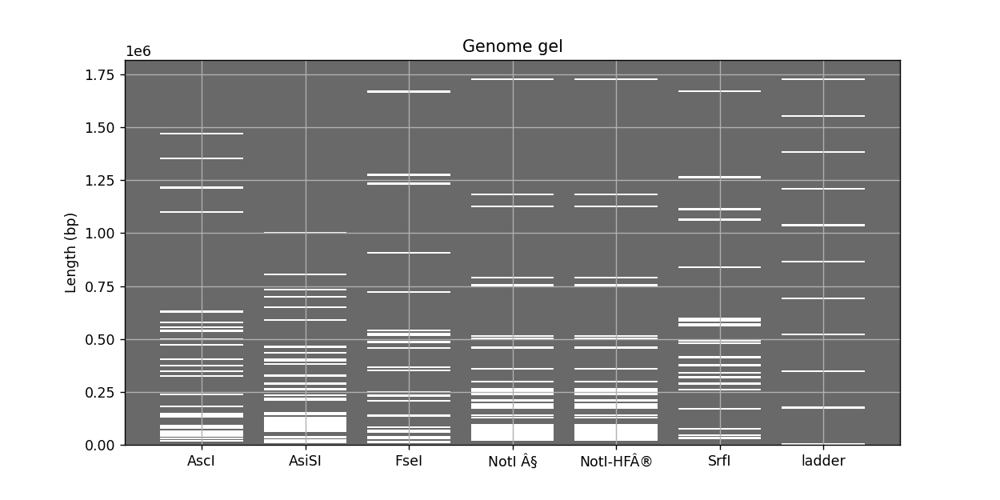
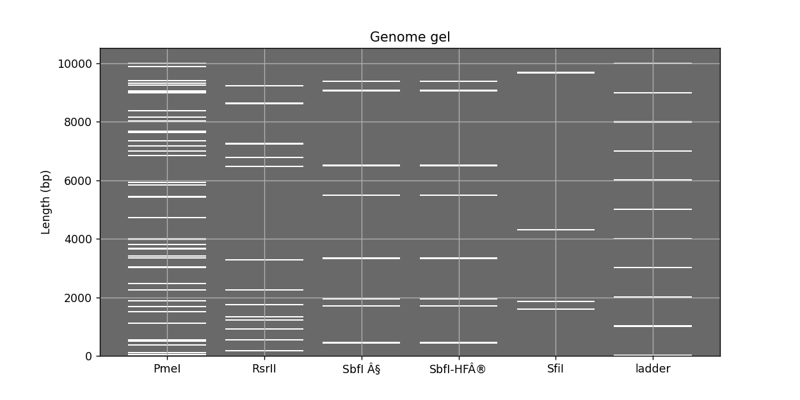
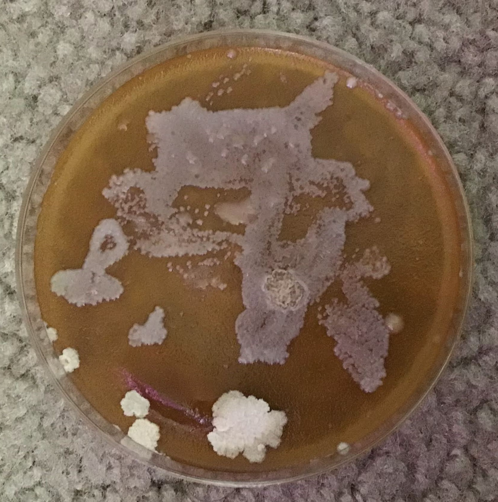
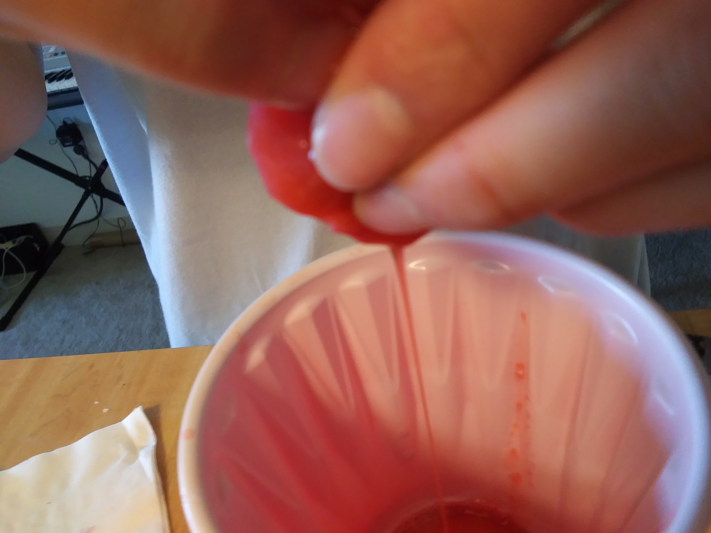
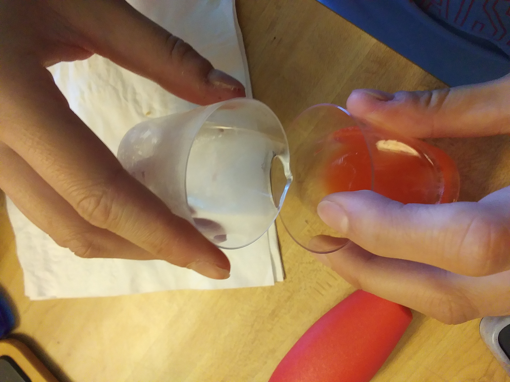
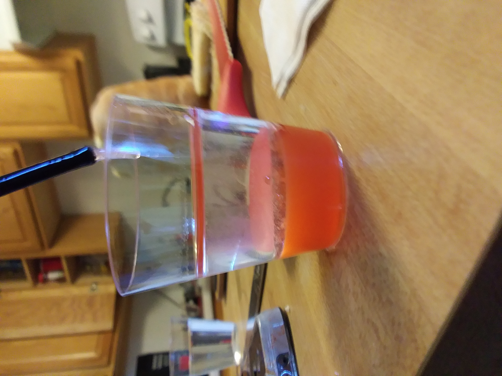
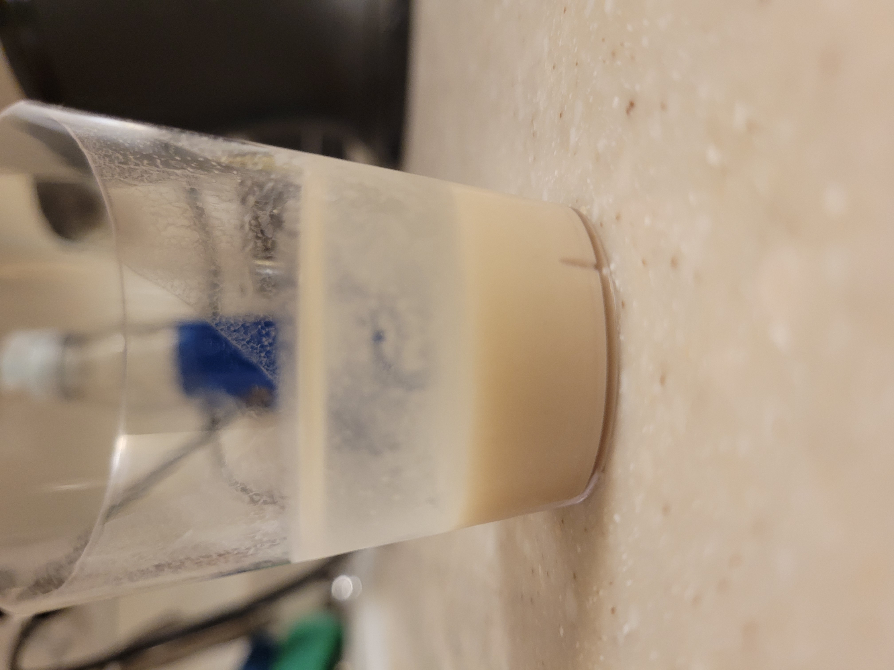
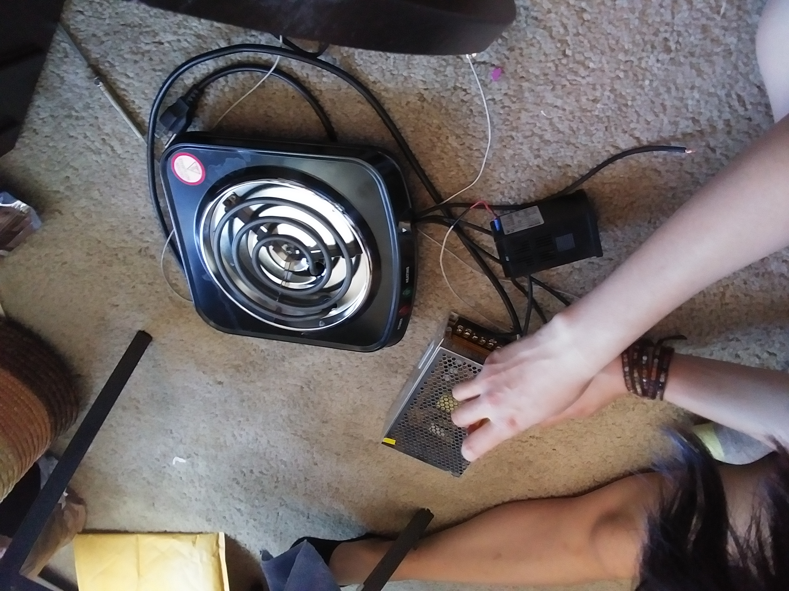
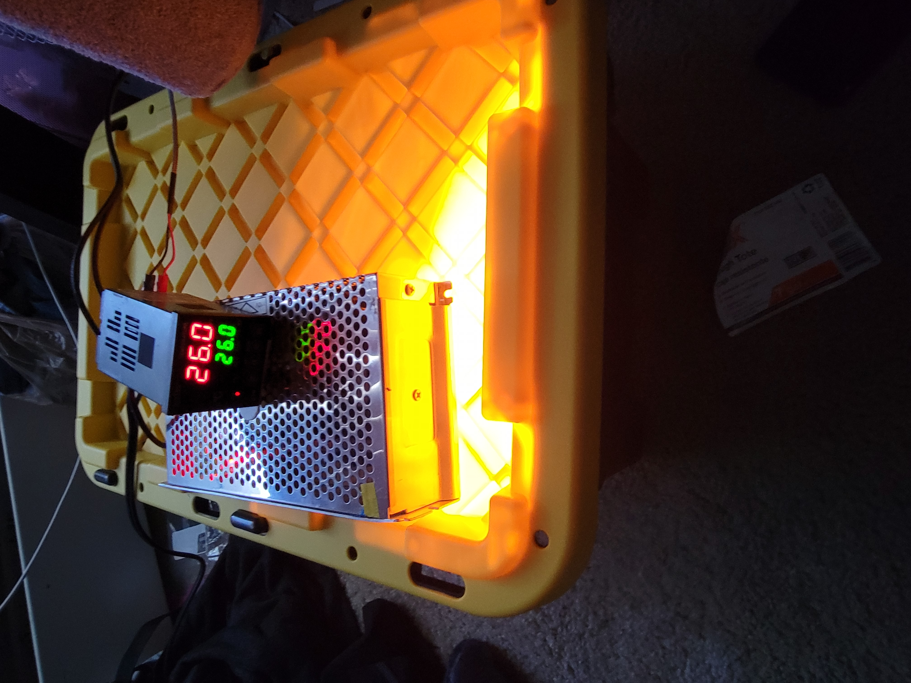

Willow Alber-MartinI am a graduate of CU Boulder, and a former student at NYU Shanghai. I graduated with my Bacheolor's of Arts in Molecular and Cellular Developmental Biology. I am currently a Master's candidate at the Univerisy of Illinois, Chicago in Public Health Policy and Administration. Professional Information
Strenghths
|

|
||||||||||||
Projects
RBC Under Microscope:

Restriction Enzyme Simulator for Low-Cost DNA Fingerprinting
Digest Code|  |
|  |
Extraction and Isolation of Environmental Acetobacter for Nata Preparation
I was introduced to nata de coco by my Filipino friend in high school. Upon some research, I found that nata is naturally fermented from pineapple juice. I tried to culture acetobacter from fermented pinapple juice
Isolation and Identification of Yeast from Commercial Kombucha
This project was coupled with the gel simulator. I knew that strawberry DNA could be extracted with household detergents, and I wanted to see if the same could be done with yeast. It failed, likely because a strawberry is octoploid and the DNA that can be pulled is more than yeast.
  Attempts at yeast extraction in the same manner as the strawberry did not yield results
Incubator
I made an incubator out of a home depo box, a heatlamp, and PID controlled Walmart burner. It can be set to a specified temperature and left to run.
 